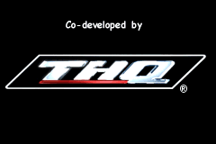

Super Monkey Ball Jr. (Europe) (En,Fr,De,Es,It)
EEPROM 64K Save Format Spec gbakit Built-In 💾 MultiBoot 🎮 4P Link
Cartridge Identity
- Game Code
ALUP(FamilyALU)- Header Title
SUPER MONKEY- Maker / Revision
8P/ rev0- ROM Size
- 8.0 MiB (8,388,608 B)
- Save Media
EEPROM 64K- SHA-256
8725f545f19362b1c72243ef9b9a848572ae5193c7a863a88f521a4cdd279be6- Engine / SDK Group
comm-009(51 families)
Screenshots


Link Cable & Multiplayer Communications
This title contains detected communication capabilities: 💾 MultiBoot 🎮 4P Link.
Detailed protocol specifications, SIO registers, Joybus commands, and MultiBoot sequences are documented in the Link & Multiplayer Reference.
- Multi-Player SIO (4P)
- 16-bit ring network · SIOCNT (
0x04000128) literals:0x038ef4,0x0391b0,0x03937c· SIODATA32/SIOMULTI0 (0x04000120) literals:0x03919c,0x039364,0x03a988 - Single-Cart MultiBoot
- Single-Cartridge MultiBoot (Download Play) client/server handler · Thumb SWI 0x25 (
0xDF25):0x192c86,0x49eede,0x4c6090,0x566fe4· ARM SWI 0x25 (0xEF000025):0x67b6ec
Battery Save Format Specification
Open Full Save Format SpecDownload Sample .sav (8,192 B)Download save-format.json
- Specification Coverage
- 24 mapped fields · 2 verified checksum(s) · Confidence: HIGH
- gbakit Built-In Support
- Built-in (ALUP)
gbakit save verify ALUP save.sav
gbakit save decode ALUP save.sav
gbakit save fix ALUP damaged.sav -o repaired.savLate-Game / Unlocked Battery Save
Synthesized clean-room with zero ROM patching and verified live in headless
libmgba.so.0.10 —
see the Late-Game Saves & Boundary Fuzzing Showcase.
- Late-Game Save
- Download
alup_lategame.sav(8 KiB) · gbakit verify OKcrc16_xmodem
Set all 25 progress bitfield bytes to 0xFF (unlocking Master Mode, Expert Extra, and Party Games) plus 999,999 high score with verified CRC16-XMODEM.

Observed Battery Save Layout
- Fill Byte & Active Size
0x00fill · 179–512 / 8,192 B active (entropy 0.00 bits/B)- Active Offset Ranges
0x0–0x1FF(1 total)- ASCII Magic / Headers
- None detected
- Observed Variable Regions
- 508 bytes across 3 spans:
0x0–0x23,0x27–0x35,0x37–0x1FF - Candidate Checksum/Counter Spans
- None
Asset Map (formatkit.asset-map.v1)
Download ALUE-r0-de40cac26ae34908.asset-map.json.gz (20,754 B (20.3 KiB)) Verified PASS · 1.34% coverage
| Metric | Bytes / Value | Entries |
|---|---|---|
| Identified | 45,197 B (44.1 KiB) (1.08%) | 157 |
| Mapped | 0 B (0.00%) | 0 |
| Opaque | 11,040 B (10.8 KiB) (0.26%) | 1 |
| Unknown | 4,138,067 B (3.95 MiB) (98.66%) | 141 |
| Total ROM Size | 4,194,304 B (4.00 MiB) | 299 |
| Coverage % | 1.34% | — |
| Entries w/ Code Refs | 161 / 299 (53.85%) | — |
Top Identified Formats: gfx.gba-palette (155 · 43,840 B (42.8 KiB)) · compress.bios-lz77 (1 · 1,165 B (1.1 KiB)) · gba.rom-header (1 · 192 B)
Largest unknown Extents (Headerless / Custom Asset Candidates)
| Offset | Size | Shannon Entropy | Code Refs |
|---|---|---|---|
0x002B0828 | 830,428 B (811.0 KiB) | 6.322 bits/B | 0 |
0x00176050 | 569,328 B (556.0 KiB) | 6.734 bits/B | 0 |
0x00104B20 | 464,144 B (453.3 KiB) | 6.728 bits/B | 0 |
0x0037B424 | 347,160 B (339.0 KiB) | 6.555 bits/B | 0 |
0x00273F1C | 248,044 B (242.2 KiB) | 6.670 bits/B | 0 |
gzip -dk ALUE-r0-de40cac26ae34908.asset-map.json.gz && gbakit map verify rom.gba ALUE-r0-de40cac26ae34908.asset-map.json
gbakit assets export rom.gba --asset-map ALUE-r0-de40cac26ae34908.asset-map.json -o out/Text, Fonts & Scene Data
- Primary Text Encoding
- Plain ASCII (uncompressed) (
227ASCII strings) - Font & VWF Indicators
- VWF Width Table 1bpp Font · BIOS SWIs: BitUnPack
0x10:25· LZ770x11/12:172· Huffman0x13:13· RLE0x14/15:6 - Scene & Packaging
17ROM pointer tables (≥32 entries,1≥200) ·3relativeu32TOCs ·241OAM metasprite hits · FourCC:TEXT
Hardware MMIO Subsystems
ppu_display0x8000678,0x8037b2c,0x8038494,0x80406bc,0x8041198
Regional Variants & Revisions (Family ALU)
- Super Monkey Ball Jr. (USA) (
ALUE, 4 MiB)